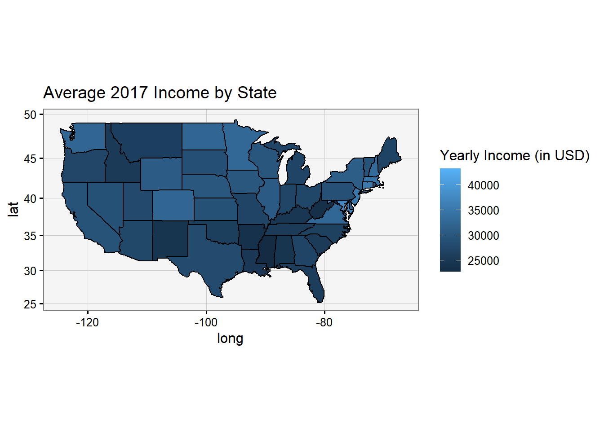

# Initial packages required (we'll be adding more)
library(tidyverse)
library(datasets)
library(fec16)
library(ggplot2)
library(tidycensus)
library(dplyr)
library(sf)
library(ggspatial)
library(mdsr) # package associated with our MDSR bookMaps
library(maps)
us_states <- map_data("state")
head(us_states) long lat group order region subregion
1 -87.46201 30.38968 1 1 alabama <NA>
2 -87.48493 30.37249 1 2 alabama <NA>
3 -87.52503 30.37249 1 3 alabama <NA>
4 -87.53076 30.33239 1 4 alabama <NA>
5 -87.57087 30.32665 1 5 alabama <NA>
6 -87.58806 30.32665 1 6 alabama <NA>StatePopulation <- read.csv("https://raw.githubusercontent.com/ds4stats/r-tutorials/master/intro-maps/data/StatePopulation.csv", as.is = TRUE)us_rent_income |>
filter(variable == "income") |>
mutate(name = str_to_lower(NAME)) |>
select(-NAME) |>
right_join(us_states, by = c("name" = "region")) |>
ggplot(mapping = aes(x = long, y = lat,
group = group)) +
geom_polygon(aes(fill = estimate), color = "black") +
labs(title = "Average 2017 Income by State", fill = "Yearly Income (in USD)") +
coord_map() +
theme_mdsr()
We can see that states like Maryland and Washington had a greater yearly income for 2017 while states like Alabama and West Virginia were not as fortuitous. It’s interesting how states like Maryland and Virginia are doing well while their neighbors are all on the other end of the spectrum. One other thing to note is that the Southeast US tended to earn less than most other regions.
# summary of the 8 congressional Wisconsin districts and the 2016 voting
district_elections <- results_house |>
mutate(district = parse_number(district_id)) |>
group_by(state, district) |>
summarize(
N = n(),
total_votes = sum(general_votes, na.rm = TRUE),
d_votes = sum(ifelse(party == "DEM", general_votes, 0), na.rm = TRUE),
#we add together all the votes for democrats in the district
r_votes = sum(ifelse(party == "REP", general_votes, 0), na.rm = TRUE),
#same but with only republicans
.groups = "drop"
) |>
mutate(
other_votes = total_votes - d_votes - r_votes,
r_prop = r_votes / total_votes,
winner = ifelse(r_votes > d_votes, "Republican", "Democrat")
)
wi_results <- district_elections |>
filter(state == "WI")
wi_results |>
select(-state)# Download congressional district shapefiles
options(timeout = 200)
src <- "http://cdmaps.polisci.ucla.edu/shp/districts113.zip"
lcl_zip <- fs::path(tempdir(), "districts113.zip")
download.file(src, destfile = lcl_zip)
lcl_districts <- fs::path(tempdir(), "districts113")
unzip(lcl_zip, exdir = lcl_districts)
dsn_districts <- fs::path(lcl_districts, "districtShapes")
# read shapefiles into R as an sf object
st_layers(dsn_districts)
# be able to read as a data frame as well
districts <- st_read(dsn_districts, layer = "districts113") |>
mutate(DISTRICT = parse_number(as.character(DISTRICT)))
head(districts, width = Inf)
class(districts)
#####################################
# create basic plot with Wisconsin congressional districts
wi_shp <- districts |>
filter(STATENAME == "Wisconsin")
wi_shp |>
st_geometry() |>
plot(col = gray.colors(nrow(wi_shp)))
wi_merged <- wi_shp |>
st_transform(4326) |>
inner_join(wi_results, by = c("DISTRICT" = "district"))
head(wi_merged, width = Inf)# Color based on winning party
# Note that geom_sf is part of ggplot2 package, while st_geometry is
# part of sf package
wi <- ggplot(data = wi_merged, aes(fill = winner)) +
annotation_map_tile(zoom = 6, type = "osm", progress = "none") +
geom_sf(alpha = 0.5) +
scale_fill_manual("Winning Party", values = c("blue", "red")) +
geom_sf_label(aes(label = DISTRICT), fill = "white") +
theme_void() +
labs(title = "Winners of Wisconsin's Eight Congressional Districts cir. 2016")
wi
# Color based on proportion Rep. Be sure to let limits so centered at 0.5.
# This is a choropleth map, where meaningful shading relates to some attribute
wi +
aes(fill = r_prop) +
scale_fill_distiller(
"Proportion\nRepublican",
palette = "RdBu",
limits = c(0, 1)
)From this map, we can see that quite a few districts (like 2, 3, and 4) definitely contain a strong democratic population, while the districts that are more in the middle (like 1, 7 and 8) are just ever so slightly right leaning. For a party wanting to gerrymander, you would need to group all your opponent’s voters in a select few borders so that their votes go towards an overwhelming victory in those areas, while yours are spread around so that you use your total voters strategically, just barely pulling off a win. With this map, I can definitely understand the argument that Republicans have lopsided control of the state, since it seems like what few Democratic victories there are have very little Republican pushback.